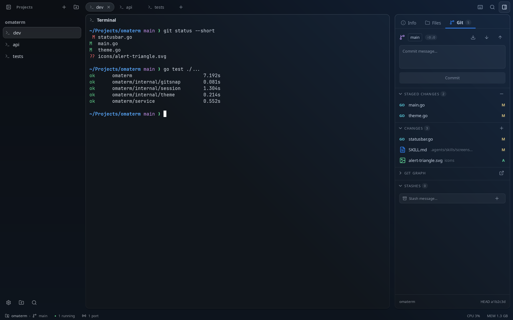
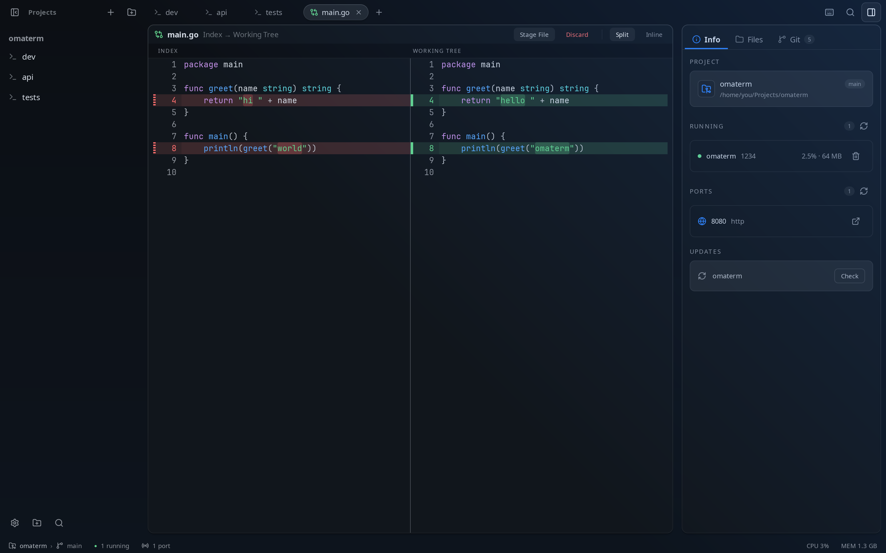
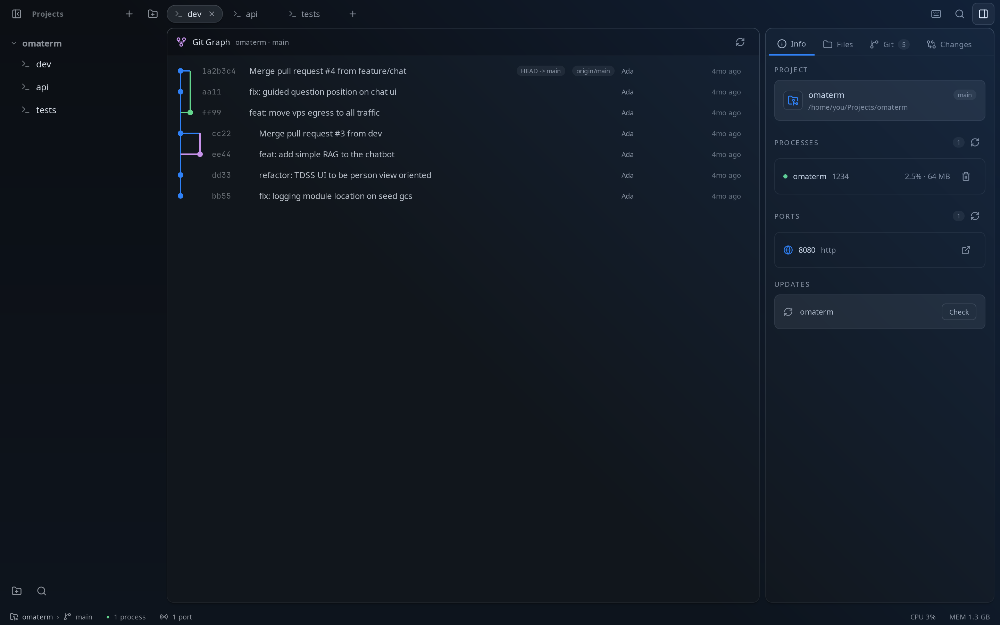
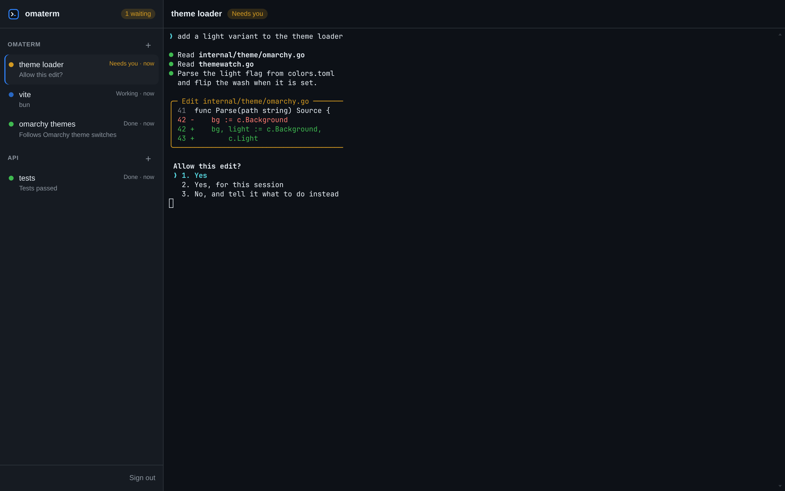
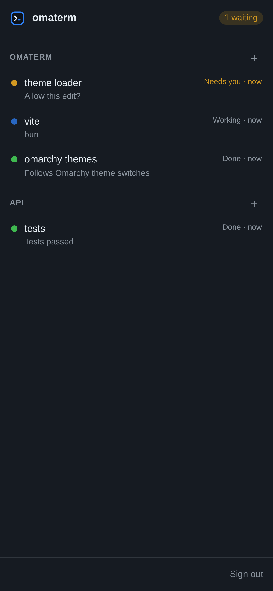
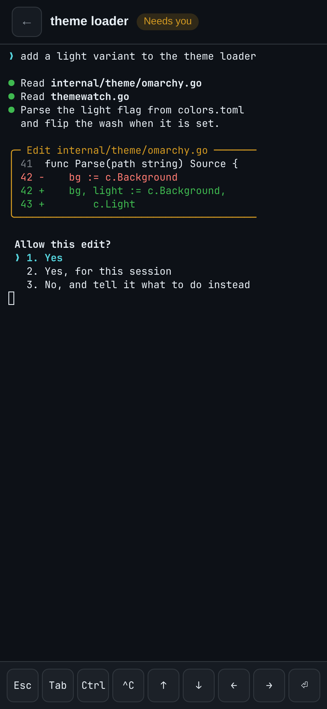
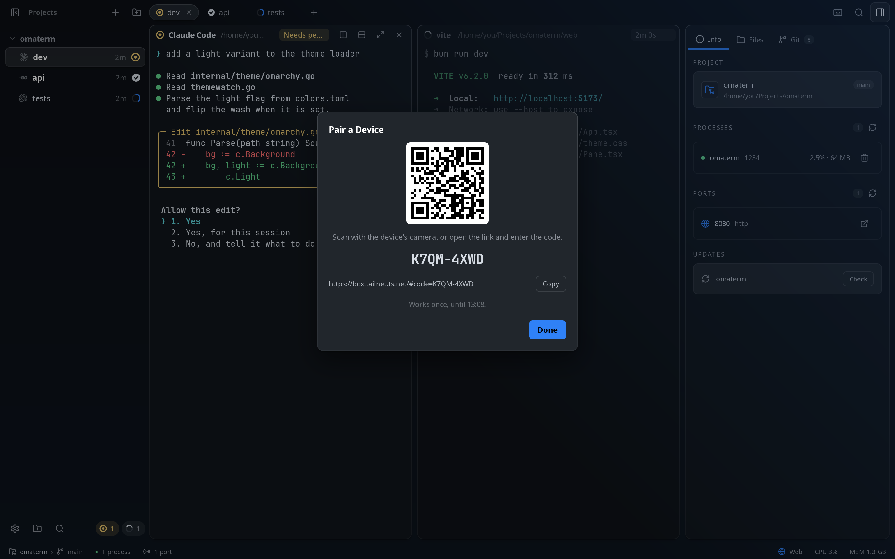
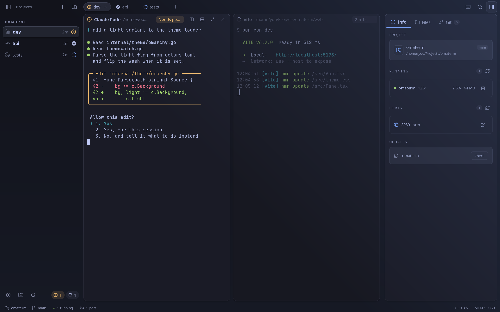
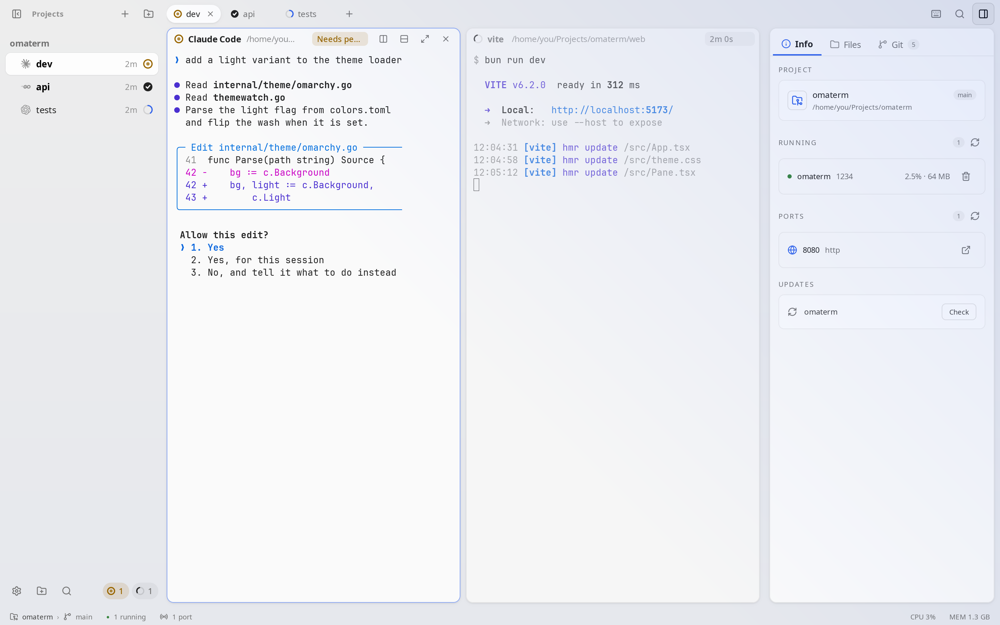

01 · agent status
See which agent needs you
Every session shows whether it is working, needs you, failed or is done, in the sidebar, on its tab and on each pane. When an agent asks for permission while you look elsewhere, you get a notification.
- Jump to the agent that needs youCtrl+Shift+J
- Next or previous sessionAlt+↓ Alt+↑
- Teach your agents to report their status
omaterm skill setup
02 · sessions and splits
Projects, sessions and split panes
A project is a folder you work in. Each one has its own sessions, and each session holds split panes: an agent, a dev server and your shell, side by side. Switching projects keeps the other project’s shells running.
- Open a projectCtrl+O
- New sessionCtrl+T
- Split right or downCtrl+Shift+R Ctrl+Shift+D
- Zoom the pane you’re inCtrl+Shift+Enter
- Go to session or project 1–9Alt+1 Alt+Shift+1
- Every session, command and settingCtrl+Shift+P
Drag a pane’s header onto another pane to move it, and drag the dividers to resize.
03 · last turn
What did that turn change?
In the Git tab, Last turn lists only what the agent changed in its last turn, apart from everything else you haven’t committed. Open a file to see its diff, then keep or revert each hunk.
- Open Last turnCtrl+Shift+A
- The same diff, from a script or another agent
omaterm diff --turn
omaterm takes a snapshot when a turn starts. No branch or commit is made.
04 · git and diffs
Git, without leaving the window
Stage, commit, amend, stash, fetch, pull and push from the Git tab, across every repository in the project. Diffs open side by side or inline, images included, and the graph shows every branch.



05 · files and editor
Find a file, read it, fix it
The Files tab browses the project. Open any file in the editor, with syntax highlighting and a Markdown preview, for the quick fix an agent didn’t need to make.
- Go to a fileCtrl+P
- Search the whole projectCtrl+Shift+F
- The Files tabCtrl+Shift+E
- SaveCtrl+S
06 · processes and ports
What’s running, and where
The Info tab lists what your project’s sessions run, with CPU and memory, and the ports they listen on. Stop a runaway process, or open a port in the browser, in one click.
- The Info tabCtrl+Shift+I
- Show or hide the side panelCtrl+Shift+B
07 · browser panes
Your app, next to the code that makes it
Open a web page as a pane, beside your shells: your dev server reloads where you can see it. Agents can read it, click, type and take screenshots to check their own work.
- Open a browser paneCtrl+Shift+O
- From a script or an agent
omaterm split --url localhost:5173 - Let agents drive the pageSetting: Let Agents Control the App
# open the app beside the agent $ omaterm split --url localhost:5173 # read it, click, type, wait $ omaterm browser text $ omaterm browser click "button.save" $ omaterm browser wait ".toast" # see what the user sees $ omaterm browser screenshot -o page.png
08 · sessions keep running
Close the window. Your agents carry on.
A session daemon runs your shells and agents, not the window. Close omaterm and they keep going; open it again and every pane is as you left it, scrollback included.
- Bring sessions back at login
omaterm daemon install-service - See what it runs
omaterm daemon status
After a reboot, Claude Code, Codex, OpenCode and Pi resume the same conversation.
$ omaterm daemon status running omaterm 0.8.4, pid 4096, 6 panes $ omaterm ls SESSION PANE NAME STATUS PROGRAM b8yvch4 jjybiza omaterm/dev waiting claude kppgfhu armc768 omaterm/web working bun 5arwznq ke45bsv api/tests idle -
09 · from your phone
Your sessions, in any browser
Turn on web access and your sessions open in a browser: projects and sessions beside a live terminal on a computer, one at a time on a phone, with keys for Esc, Ctrl and the arrows. Answer the agent that needs you from the couch.



Pair a phone in a scan
A browser sees nothing until you pair it. Web Access: Pair a Device in the palette shows a QR code; scan it and that browser is signed in. Each code works once, for ten minutes, and you can sign any device out.
- Turn it onSetting: Web Access, or
omaterm web on - Pair a device
omaterm web pair - Paired devices, and signing one out
omaterm web devicesomaterm web revoke
Reach it from anywhere
omaterm serves it on your machine only. Carry it with a tunnel you trust, or serve it on your home network:
# your own devices, on your tailnet $ tailscale serve --bg 7370 # a public https URL $ cloudflared tunnel --url http://127.0.0.1:7370 # devices on the same Wi-Fi (plain HTTP) $ omaterm web on --network

10 · themes
Themes, dark and light
Pick a dark or light theme, or follow your desktop’s, in Settings or the command palette. The window, the terminals and the editors share one palette, and its colors are checked for contrast so text stays readable. On Omarchy, omaterm uses the active Omarchy theme and follows when you switch, with no restart needed.


11 · agents drive it
Agents can use it too
The omaterm command lets agents and scripts open panes, run commands, wait for them, read the screen and report their status. It works even while the window is closed.
- Teach Claude Code, Codex, Pi and OpenCode to use it
omaterm skill setup - Every command
omaterm help
# run the tests in a new pane below $ pane=$(omaterm split --down -- go test ./...) # wait for them, then read what they printed $ omaterm wait "$pane" --exit || omaterm read "$pane" -n 80 # start another agent in a session of its own $ omaterm new -n review -- codex # tell the user you need them $ omaterm report blocked "Which database?"
12 · settings
Every preference, in one window
Settings has a page for each part of omaterm: the theme, the terminal’s font, cursor and clipboard, the editor, notifications, the agents’ integration, web access and its paired devices, the browser’s search engine and updates. Search finds any setting, and changes apply as you make them.
- Open SettingsCtrl+,
- Or from a terminal, on a page
omaterm settings terminal
and more
The rest of the kit
- Updates itself
- Signed updates arrive inside the app, with release notes written for you.
- Every shortcut
- Ctrl+Shift+/ lists them all.
- Notifications
- Choose which ones you get: needs you, finished, failed, with or without a sound. Each is a setting.
- Zoom
- Ctrl+= and Ctrl+- scale the whole window; Ctrl+0 resets it.
- Native
- A native app written in Go. It runs on Linux first, and on macOS and Windows too.
- Open source
- MIT licensed, on GitHub.
thanks
Standing on the shoulders of
omaterm wouldn’t exist without these projects. Some lent their code, others their ideas. Go and see them.
Built on
- Keroby EGOISTThe agent terminal omaterm learned the most from. Its session engine, the
omatermcommand, agent hooks and skill, and browser panes are adapted from Kero’s MIT code. - Ghosttyby Mitchell Hashimoto and contributorslibghostty-vt does the terminal emulation in every pane.
- MyGoby EGOISTThe Go framework the native window is drawn with.
- herdrIts rules for telling what each coding agent is doing, through Kero.
Inspired by
- Rexby SuperlogicalCard panes, per-pane headers and status at a glance, and OSC 7501, the Program Status Protocol omaterm reads agents’ status with.
- Ternby StencilIdeas for how an agent terminal should look and feel.
- OpenCodeIts web mode, which gave omaterm the idea of answering your agents from a phone.
- Omarchyby DHHThe desktop omaterm was first made for, and the themes it follows.
Their licenses, and those of every library omaterm uses, are in THIRD_PARTY_NOTICES.md, which ships with every release.